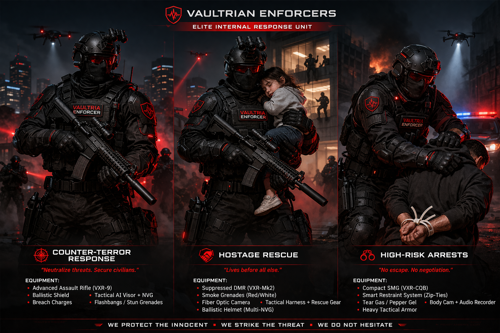

Defense & enforcement · Internal response
VAULTRIA Enforcers
Not ordinary police — a controlled, elite internal strike force for speed and precision. Civil enforcement and patrol doctrine live under VAULTRIA Police. Strategic oversight sits with Custodian of Order; doctrine aligns with internal security, Core Doctrine, and economy (CV / TV).
Mission types overview

Motto
Speed. Precision. No hesitation.
Supreme authority
Prime Custodian
Absolute authority to deploy Enforcers, override operations, and set escalation posture — within Core Doctrine and judicial oversight where applicable.
Head of internal enforcement — Police, Enforcers, riot units. Enforcers report strategically here (policy, jurisdiction, discipline); on the ground they run their own chain.
Enforcers command structure
High Enforcer Commander
Leader of all Enforcer units nationwide — direct line to national command; approves high-risk and counter-terror taskings.
Division commanders
Each runs a specialized branch — plans operations, assigns strike teams, coordinates with intelligence.
- Counter-Terror Division Threat neutralization, assault packages, bomb tech coordination.
- Hostage Rescue Division Negotiation support, extraction, civilian protection first.
- High-Risk Arrest Division Capture, containment, minimal-escape posture.
Tactical commanders
On-scene command — real-time decisions, multiple teams; life-or-death authority within rules of engagement.
Unit leaders
Squads of roughly 4–8 — breach, secure, extract objectives.
Enforcer operatives
- Breachers — entry specialists
- Marksmen — precision shooting
- Shield units — protection and advance
- Tech operatives — drones, electronic support
Probationary Enforcers
New recruits under evaluation — limited deployment until cleared.
Mission chains
Enforcers deploy along mission chains, not random callouts.
Counter-terror
Division Commander → Tactical Commander → bomb tech / assault units
Hostage rescue
Division Commander → Tactical Commander → negotiator + extraction team
High-risk arrest
Division Commander → Tactical Commander → capture units
Police vs Enforcers
| Police | Enforcers |
|---|---|
| Reactive | Pre-emptive where authorized |
| Public presence | Minimal visibility until deployment |
| Arrest-first posture | Neutralize or control per threat tier |
| Gradual escalation | Rapid escalation when doctrine allows |
Authority levels
- Level 1 — Assist police — support, not lead.
- Level 2 — Take over scene — Enforcers command the perimeter.
- Level 3 — Full tactical control — weapons-free bands per rules of engagement.
- Level 4 — Silent operation — minimal or sealed public record; highest scrutiny and audit.
Rules of operation
- No hesitation once deployed — decisions are trained, not improvised in panic.
- Comms discipline — minimal, need-to-know.
- Efficiency over spectacle — collateral damage minimized by doctrine.
What makes them elite
- Selected from the top tier of police and military pipelines
- Psychological screening and continuous fitness to serve
- Training: urban tactics, negotiation, AI-assisted combat systems
Chain of command (clean view)
- Prime Custodian
- Custodian of Order
- High Enforcer Commander
- Division commanders
- Tactical commanders
- Unit leaders
- Enforcer operatives
- Probationary Enforcers
Service benefits
Elite covenant — internal response
You do not join to serve. You join to become untouchable.
1. Status & identity
- Tier 1: Trusted — elite classification in national trust systems (see Trust Vyr context).
- Public narrative: feared by threats, respected as state authority — above routine law enforcement in mission scope.
2. Economy
- Core Vyr (CV) — high base; Trust Vyr (TV) mission bonuses.
- Where statute allows: favorable tax treatment, priority resource access, government lifestyle support.
3. Housing & logistics
Secure high-end zones; smart-home protection where infrastructure supports it.
4. Legal protection (controlled)
Mission conduct receives operational immunity when protocol and threat level justify action — investigations internal or doctrine-specified; not a blank check for abuse.
5. Identity shield
Operational identity protected from public exposure where policy requires; family listed under state protection programs when eligible.
6. Access
- Red zones, restricted infrastructure, command nodes — by clearance.
- Transport, medical, and data priority lanes.
- Insights from national systems (e.g. Aegis / Vaultryn feeds) on a need-to-know basis.
7. Physical & tech
Elite armor, AI-assisted targeting where issued, biometric-linked weapons under armory rules.
8. Family
Protected Citizen Status for dependents where chartered — healthcare, education, housing priority.
9. Career
Fast merit promotion; pathways to intelligence and advisory roles; post-service income support and senior civilian placement where quotas exist.
10. Enforcer privilege level
Each rank unlocks deeper zones, authority bands, and system access — you are not only a person but a function of the system.
Costs (realism)
- Psychological pressure and high tempo
- Monitoring extends off-duty where doctrine requires
- Limited personal freedom in role
- High-risk missions; emotional cost
Next design layers
- Rank badges and visual insignia
- Call-sign system (e.g. ENF designators)
- Mission flow playbook — step-by-step from alert to after-action
- Recruitment pipeline and academy structure